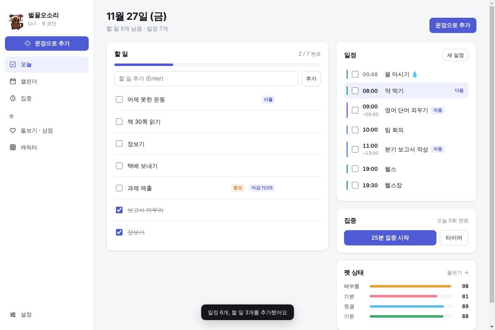
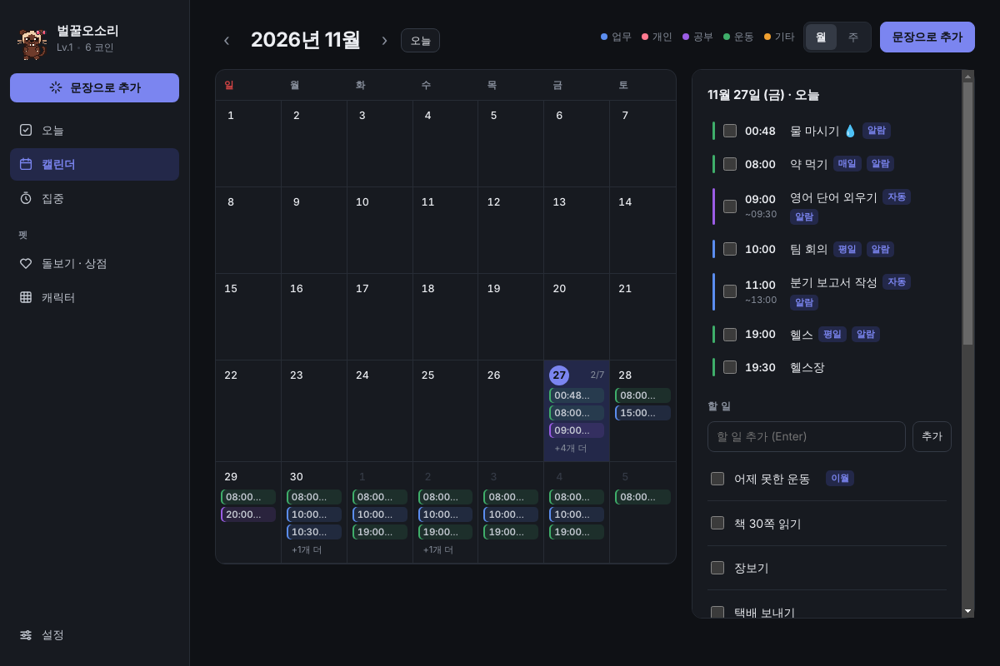
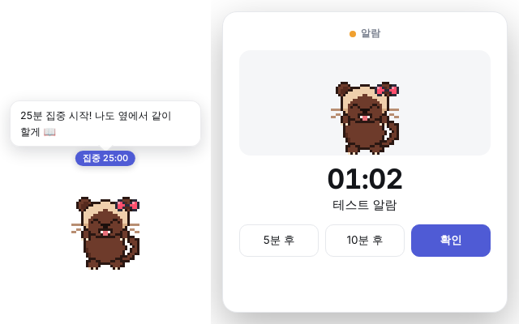
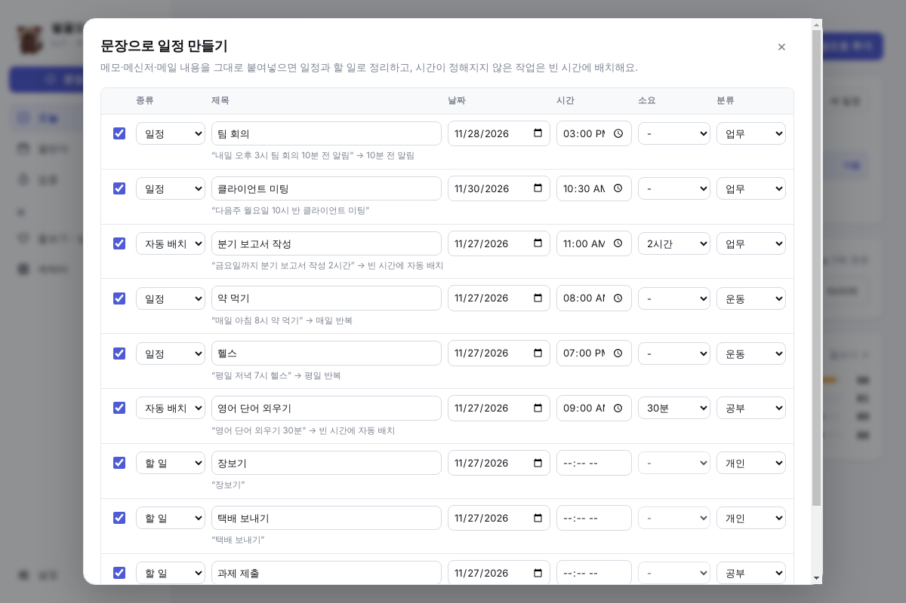
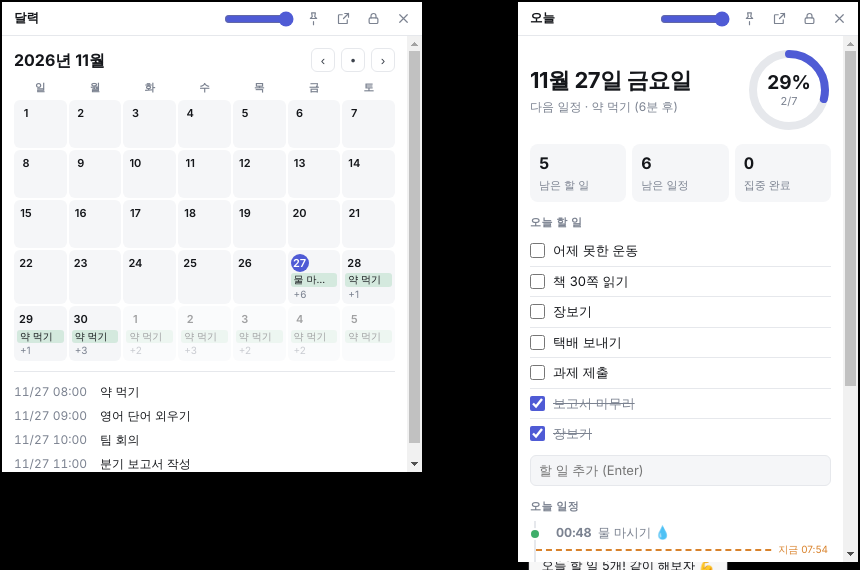

메모를 붙여넣으면 일정과 할 일로 정리하고, 시간이 정해지지 않은 작업은 빈 시간에 배치합니다. 알람이 울리면 캐릭터가 화면 가운데로 달려와요.
아래 입력창을 고쳐 보세요. 앱에 들어 있는 분석기와 같은 코드가 이 페이지에서 바로 돌아갑니다. 날짜는 오늘 기준으로 계산돼요.

체크리스트와 진행률, 마감일 표시. 끝내지 못한 일은 다음 날로 자동 이월됩니다.

월간·주간 보기, 분류별 색상, 매일·평일·매주·매월 반복. 시스템 설정에 맞춰 다크 모드로 바뀌어요.

미리 알림, 알람 창과 소리, 5·10분 다시 알림. 뽀모도로 타이머가 돌아가는 동안 캐릭터가 옆에서 같이 공부합니다.

"보고서 2시간"처럼 걸리는 시간만 적으면 기존 일정과 겹치지 않는 빈 시간을 찾아 배치해요. 추가 전에 표에서 고칠 수 있습니다.

달력과 데일리 위젯을 바탕화면에 띄워 둘 수 있어요. 데일리 위젯은 오늘 할 일 완료율, 남은 일정 타임라인, 최근 7일 기록을 그래프로 보여줍니다. 항상 위·투명도·클릭 통과 잠금을 지원해요.
바탕화면 전체에 간식이 떨어지고, 릴리가 작업 표시줄 위를 달리며 받아요. 캘린더는 "크게 보기"로 창 전체를 달력으로 쓸 수 있습니다.
128px 고해상도로 그린 릴리는 머리·팔·다리·꼬리가 따로 움직여요. 걷기, 공놀이, 씻기, 집중, 레벨업까지 행동마다 전용 모션과 표정이 있습니다. 할 일과 일정을 끝내면 꿀이 쌓이고, 모은 꿀로 모자와 리본을 사 줄 수 있어요. 기본 캐릭터 8종에, 그림 파일을 도트로 바꿔 나만의 캐릭터도 만들 수 있어요.
아래 버튼으로 PixelPetScheduler-win.zip을 받아요.
파일을 우클릭해 압축 풀기를 누르고, 원하는 폴더에 둡니다.
PixelPetScheduler.exe를 더블클릭해요. 파란 경고 창이 뜨면 추가 정보 → 실행을 누르세요.
Windows 10/11 64비트 · 단일 실행 파일 · 74.3 MB zip
지금은 Windows용 실행 파일만 있어요. Mac에서는 소스 코드를 받아 npm install → npm start로 실행할 수 있습니다.
내 컴퓨터의 %APPDATA%\pixel-pet-scheduler에만 저장되고, 인터넷으로 보내지지 않아요.
Win + R → shell:startup을 열고 exe의 바로가기를 넣어 두세요.
캐릭터나 작업 표시줄 아이콘을 우클릭해 종료를 누르면 됩니다.